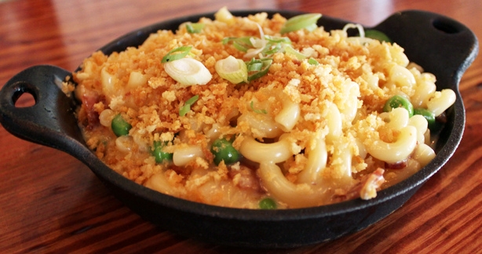

Traditional macaroni and cheese is a casserole baked in the oven; however, it may be prepared in a sauce pan on top of the stove or using a packaged mix. In the United States it is considered a comfort food.

Ingredients
10 ounces medium whole wheat macaroni
2 tablespoons (Smart Balance butter), plus more for brushing pan
2. Cook macaroni according to package directions until al dente; drain.
3. Melt 2 tbsp butter in sauce pan over medium heat. Stir in flour and cook 1 minute. Add milk; cook 6 minutes or until thickened, stirring constantly.
4. Remove from heat; stir in 1 1/2 cups cheeses. Season with salt and pepper. Pour over noodles and combine.
5. Transfer to a 9x13-inch baking dish. Sprinkle with remaining 3/4 cup cheese.
6. Bake 45 minutes or until top is crisp and beginning to brown. Let stand 10 minutes before serving.
7. For extra flavor to this mac and cheese add chopped green onion and sprinkle bread crumbs on top